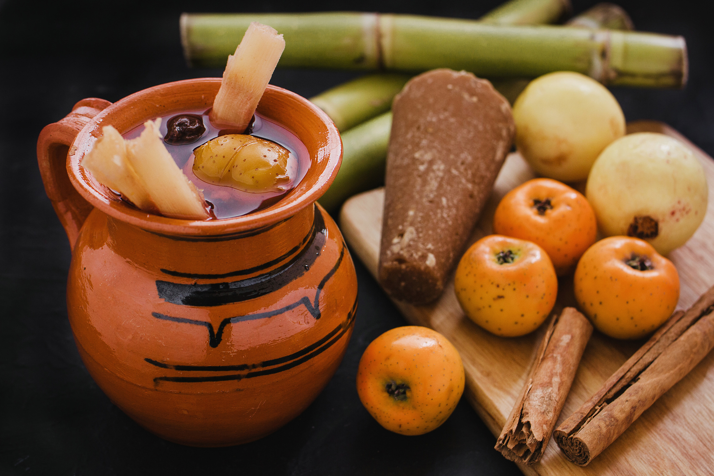
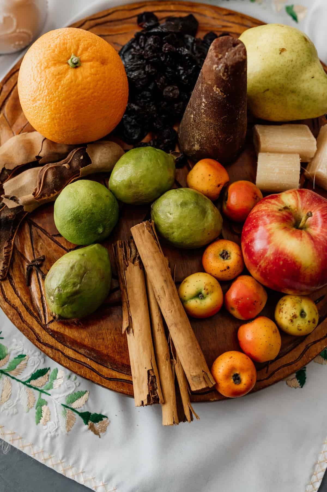

Ponche Navideño Mexicano

Descripcion
La época navideña en México está llena de tradiciones y sabores propias
de la festividades decembrinas y uno de esos sabores únicos y deliciosos es nuestro tradicional Ponche de frutas Navideño.
En las reuniones de fin de año, algunas familias tienen una olla de barro grande calentando a fuego lento encima de la estufa con ese
líquido dulce lleno de frutas de temporada, mientras que los sabores de canela y frutas cítricas se mezclan y flotan en el aire,
aromatizando el ambiente con el tono de la época. ¡El Ponche de frutas Navideño es una parte esencial de las tradiciones de Navidad en México!
Ingredientes

- 4 Litros de agua
- 1 cono piloncillo grande o 400 gramos de azúcar morena
- 4 palitos de canela
- 500 gramos de tejocotes
- 750 gramos de guayabas (como 12 guayabas medianas)
- ¾ taza de ciruelas pasas picadas
- 1½ taza de manzanas picadas
- 1 taza de pera picada
- ½ taza de pasitas
- 3 pedazos de caña de azúcar alrededor 15 cm., de corte largo en cuatro pedazos cada uno.
- 1 taza de vainas de tamarindo peladas o 1 taza de flores de Jamaica
- Ron o aguardiente al gusto
Instrucciones
- Coloque agua en una olla grande.
- Agrega el piloncillo (o azúcar morena) y la canela, cocina durante unos 15 minutos. Si estás usando Tejocotes frescos, agréguelos con el piloncillo y la canela, ya que tardan más tiempo en ablandarse.
- Agrega las guayabas picadas, las manzanas y las ciruelas pasas junto con el resto de los ingredientes, como los pedazos de caña de azúcar, las vainas de tamarindo o las flores de Jamaica. Si está utilizando la versión enlatada de los tejocotes, agréguelos en este paso.
- Cocine a fuego lento durante aproximadamente 1 hora. Sirva caliente en tazas, sirva algo de fruta y agregue ron a su gusto.
El origen de la receta se puede encontrar aqui: Mexico En Mi Cocina
Inicio
Regresar al principio